原始 GAN 通过判别器与生成器的极小极大博弈，等价于最小化真实分布与生成分布之间的 JS 散度。当两分布支撑集不重叠时，JS 散度常为常数，导致梯度消失、训练不稳定。WGAN（Wasserstein GAN）用 Wasserstein 距离替代 JS 散度，并引入 Critic（评论家）与权重裁剪或梯度惩罚，使损失具有更好的梯度性质，训练更稳定。本章介绍 WGAN 的动机、理论基础、目标函数与实现要点。
原始 GAN 的目标函数为:
\[\min_G \max_D \, \mathbb{E}_{x \sim p_{\text{data}}}[\log D(x)] + \mathbb{E}_{z \sim p_z}[\log(1 - D(G(z)))] \tag{1}\]
在最优判别器 \(D^*\) 下，该目标等价于最小化真实分布 \(p_{\text{data}}\) 与生成分布 \(p_g\) 的 Jensen-Shannon 散度:
\[\min_G \, 2\cdot\text{JS}(p_{\text{data}} \| p_g) - 2\log 2 \tag{2}\]
JS 散度的局限:
因此需要一种即使分布不重叠仍能提供有效梯度的度量，并对应更稳定的训练目标。
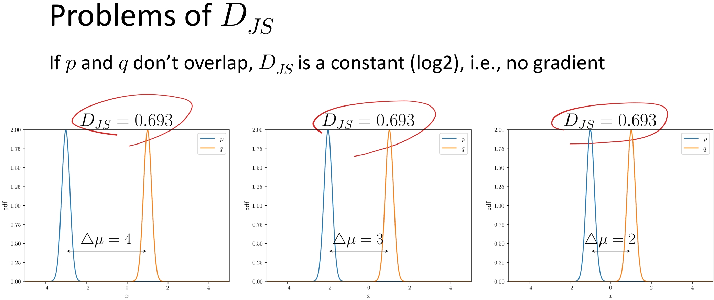
图1 当 \(p_{\text{data}}\) 与 \(p_g\) 不重叠时，JS 散度恒为 \(\log 2\)。
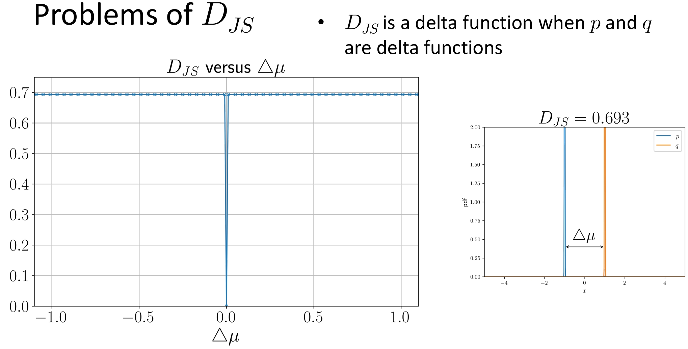
图2 当 \(p_{\text{data}}\) 与 \(p_g\) 为 delta 函数时，JS 散度的情形。
WGAN（Arjovsky et al., 2017）做了以下改进:
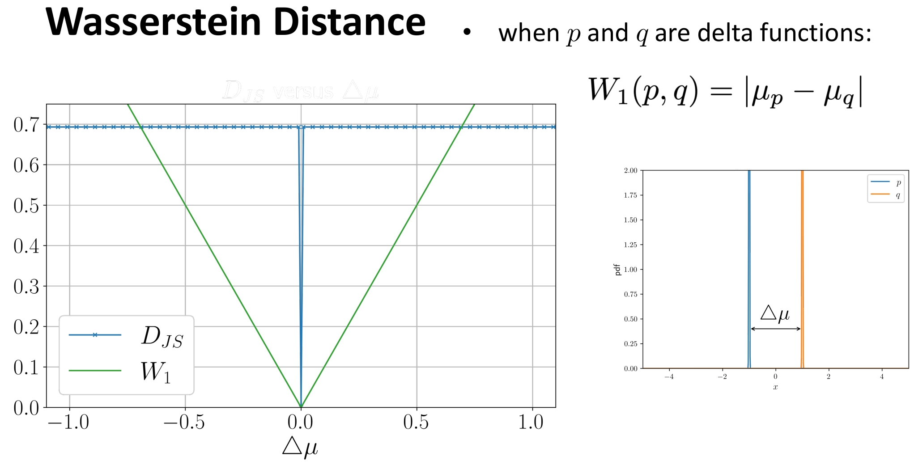
图3 JS 散度在支撑集不重叠时恒为常数，导致梯度消失；Wasserstein 距离仍随分布变化而变化，可提供有效梯度。
Wasserstein 距离（Wasserstein Distance），又称推土机距离（Earth Mover’s Distance, EMD），是一种衡量两个概率分布之间差异的度量方式。它在最优传输理论（Optimal Transport Theory）中具有核心地位，近年来因其在生成模型（如 WGAN）中的优异表现而广受关注。
想象你有两堆沙子，形状不同，但总质量相同。你想把其中一堆沙子重新堆成另一堆的形状。Wasserstein 距离就是完成这个任务所需的最小“工作量”——即（每单位沙子移动的距离）×（移动的沙子量）的总和。 - 如果两堆沙子很接近，只需轻微挪动 → Wasserstein 距离小。 - 如果两堆沙子相距很远或完全不重叠 → 需要大量搬运 → Wasserstein 距离大。
这比“是否重叠”更精细，因此比 KL 散度、JS 散度更适合处理支撑集不重叠（support disjoint）的分布（这在高维空间中非常常见）。
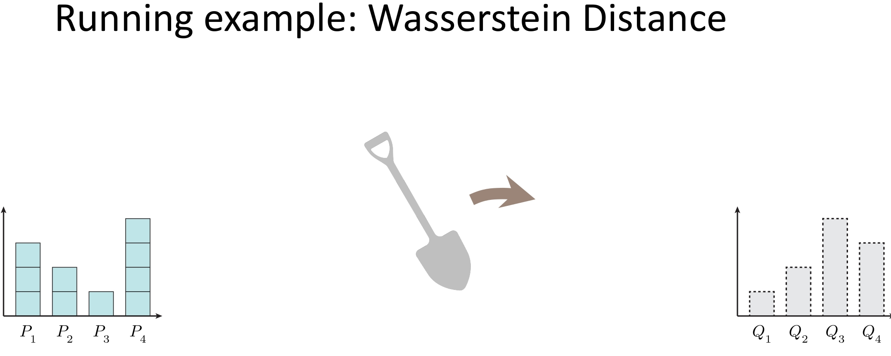
图4 Wasserstein距离推土机直观
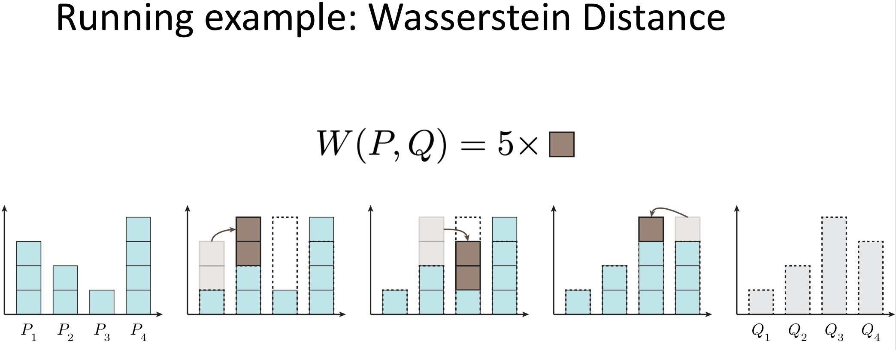
图5 把 P 分布通过“铲子”变成 Q 分布所需要的步骤
定义:对两个概率分布 \(p_{\text{data}}\) 与 \(p_g\)，Wasserstein-1 距离（Kantorovich-Rubinstein 形式）为:
\[W_1(p_{\text{data}}, p_g) = \inf_{\gamma \in \Pi(p_{\text{data}}, p_g)} \mathbb{E}_{(x,y)\sim\gamma}[\|x - y\|] \tag{3}\]
其中 \(\Pi(p_{\text{data}}, p_g)\) 为边际分布为 \(p_{\text{data}}\) 与 \(p_g\) 的所有联合分布。直观上，\(W_1\) 表示把 \(p_g\) 的“质量”搬到 \(p_{\text{data}}\) 所需的最小平均移动距离。
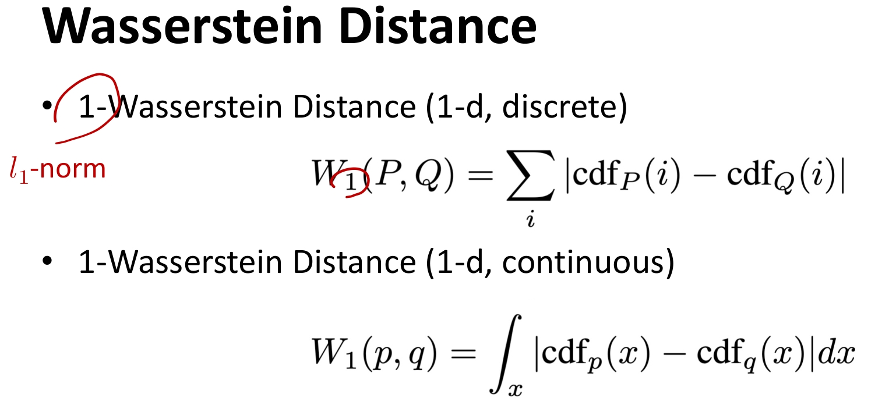
图6 1-D 情况下离散与连续的 Wasserstein-1 距离计算公式。
对偶形式（Kantorovich-Rubinstein 对偶）:
\[W_1(p_{\text{data}}, p_g) = \sup_{\|f\|_L \leq 1} \left\{ \mathbb{E}_{x \sim p_{\text{data}}}[f(x)] - \mathbb{E}_{x \sim p_g}[f(x)] \right\} \tag{6}\]
其中 \(\|f\|_L \leq 1\) 表示 \(f\) 为 1-Lipschitz（即 \(|f(x)-f(y)| \leq \|x-y\|\)）。因此，若我们用神经网络 \(f_w\) 近似满足 1-Lipschitz 的 \(f\)，则:
\[\max_{w:\, f_w \text{ 1-Lipschitz}} \left\{ \mathbb{E}_{x \sim p_{\text{data}}}[f_w(x)] - \mathbb{E}_{z \sim p_z}[f_w(G(z))] \right\} \tag{7}\]
在最优时等于 \(W_1(p_{\text{data}}, p_g)\)。WGAN 即用该式训练 Critic \(f_w\)，并同时最小化 \(W_1\) 来训练生成器 \(G\)。
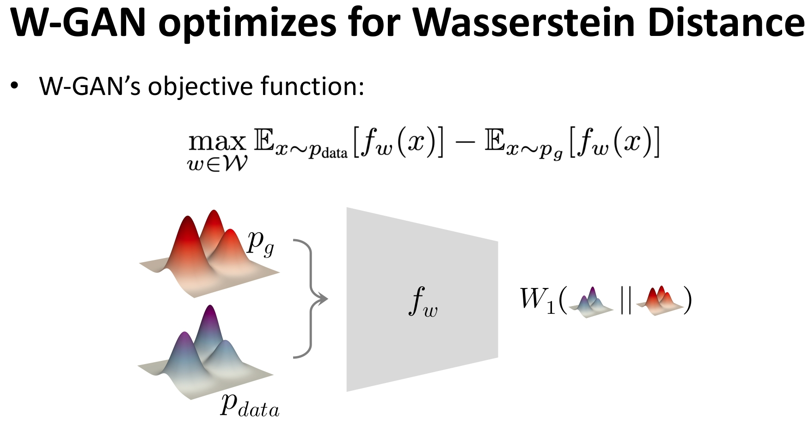
图7 使用神经网络 \(f_w\) 近似满足 1-Lipschitz 的 \(f\)。
WGAN 论文通过 权重裁剪 近似 1-Lipschitz:将 Critic 的权重限制在 \([-w, w]\)（如 \(w=0.01\)）。这样 \(f\) 的 Lipschitz 常数被界住，虽非严格为 1，但实践上能稳定训练。
WGAN-GP（Gradient Penalty）:Gulrajani et al. (2017) 用 梯度惩罚 替代权重裁剪，直接约束 Critic 在样本处的梯度范数接近 1。惩罚项为:
\[\mathcal{L}_{GP} = \lambda \, \mathbb{E}_{\hat{x}}\left[ \left( \|\nabla_{\hat{x}} f(\hat{x})\|_2 - 1 \right)^2 \right] \tag{8}\]
其中 \(\hat{x} = \varepsilon x_{\text{real}} + (1-\varepsilon) x_{\text{fake}}\)，\(\varepsilon \sim U(0,1)\)，即真实样本与生成样本的随机凸插值。Critic 总损失为:
\[L_c = -\big(\mathbb{E}[f(x_{\text{real}})] - \mathbb{E}[f(x_{\text{fake}})]\big) + \mathcal{L}_{GP} \tag{9}\]
这样无需裁剪权重，Critic 表达能力更强，且 1-Lipschitz 约束更贴近理论；\(\lambda\) 常用 10。本项目实现采用 WGAN-GP。
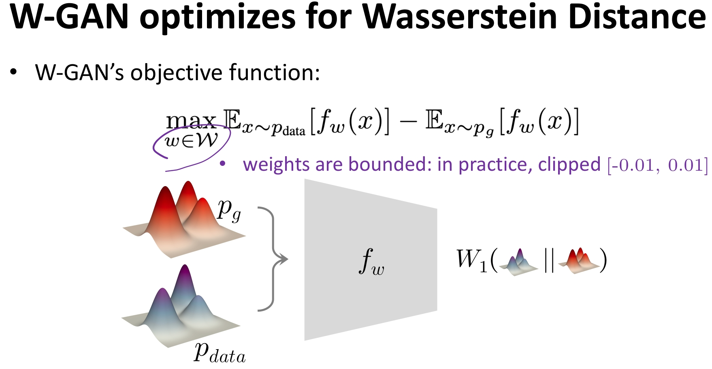
图8 权重裁剪示意:Critic 权重限制在 \([-w, w]\)（如 \(w=0.01\)）。WGAN-GP 则用梯度惩罚替代裁剪。
| 角色 | 目标（WGAN） |
|---|---|
| Critic | 最大化 \(\mathbb{E}_{x \sim p_{\text{data}}}[f(x)] - \mathbb{E}_{z \sim p_z}[f(G(z))]\)，即估计 \(W_1\) |
| Generator | 最小化 \(W_1\)，即最大化 \(\mathbb{E}_{z \sim p_z}[f(G(z))]\)（让生成样本在 Critic 下得高分） |
因此训练时: - Critic:最小化 \(L_c = -\big(\mathbb{E}[f(x_{\text{real}})] - \mathbb{E}[f(G(z))]\big)\)； - Generator:最小化 \(L_g = -\mathbb{E}[f(G(z))]\)。
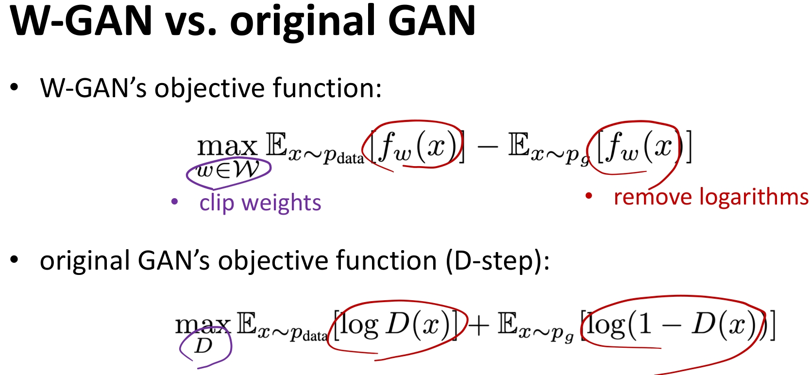
图9 WGAN 与原始 GAN 的对比
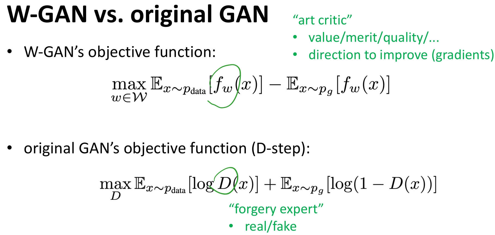
图10 WGAN 与原始 GAN 的对比
主要差异可概括为三点:
| 特性 | GAN | WGAN |
|---|---|---|
| 度量 | JS 散度 | Wasserstein-1 距离 |
| 判别端 | Discriminator，输出概率 \([0,1]\) | Critic，输出标量 \(\mathbb{R}\) |
| 最后一层 | Sigmoid | 无激活（线性） |
| 约束 | 无 | 1-Lipschitz（权重裁剪或梯度惩罚） |
| 损失含义 | 二分类交叉熵 | \(W_1\) 的近似，可解释为“距离” |
| 梯度性质 | 支撑不重叠时易梯度消失 | 仍可提供有效梯度 |
| 训练稳定性 | 对超参敏感，易模式崩塌 | 相对更稳定，损失可作监控 |
| 典型优化器 | Adam | RMSprop（论文推荐） |
WGAN（权重裁剪）:
WGAN-GP（梯度惩罚，本项目采用）:
本项目在 code/dl/gan/wgan/ 下实现了 WGAN-GP（梯度惩罚版）:
wgan.py:Generator 与 GAN 相同；Critic 与 Discriminator 结构类似，最后一层为 nn.Linear(..., 1)，无 sigmoid。train_infer.py:每个 batch 先更新 Critic 一次（Wasserstein 项 + 梯度惩罚），再按 n_critic 每若干 batch 更新 Generator 一次；推理时展示真实/生成样本的 Critic 分数及插值效果。config.yaml:可配置 n_critic、lambda_gp（梯度惩罚系数，默认 10）、optimizer（WGAN-GP 推荐 adam）、学习率等；无 weight_clip。梯度惩罚计算:在真实样本与生成样本的随机插值 \(\hat{x}\) 上对 Critic 输出求梯度，惩罚梯度范数偏离 1。
def compute_gradient_penalty(critic, real_samples, fake_samples):
alpha = torch.rand(real_samples.size(0), 1).to(device)
interpolates = (alpha * real_samples + (1 - alpha) * fake_samples).requires_grad_(True)
d_interpolates = critic(interpolates)
gradients = autograd.grad(
outputs=d_interpolates, inputs=interpolates,
grad_outputs=torch.ones_like(d_interpolates), create_graph=True, retain_graph=True, only_inputs=True
)[0]
gradients = gradients.view(gradients.size(0), -1)
gradient_penalty = ((gradients.norm(2, dim=1) - 1) ** 2).mean() * lambda_gp
return gradient_penaltyCritic 与 Generator 更新（WGAN-GP）:
# Critic:Wasserstein 项 + 梯度惩罚（无权重裁剪）
real_validity = critic(images)
fake_images = generator(noise).detach()
fake_validity = critic(fake_images)
c_loss_w = -torch.mean(real_validity) + torch.mean(fake_validity)
gradient_penalty = compute_gradient_penalty(critic, images, fake_images)
c_loss = c_loss_w + gradient_penalty
c_loss.backward()
c_optimizer.step()
# Generator:每 n_critic 个 batch 更新一次
fake_validity = critic(generator(noise))
g_loss = -torch.mean(fake_validity)
g_loss.backward()
g_optimizer.step()优化器使用 Adam，betas=(0.0, 0.9)，与 WGAN-GP 论文一致。
本节基于 code/dl/gan/wgan/ 的 WGAN-GP 实现，在 MNIST 上训练后的推理与 Critic 评分结果。
代码中的 infer 部分展示 WGAN-GP 的生成能力:
# 模型推理 - 生成新图像
if infer:
generator.eval()
with torch.no_grad():
noise = torch.randn(sample_size, noise_dim, device=device)
fake_images = generator(noise)
fake_images = fake_images.view(sample_size, 1, 28, 28)
# 将输出从 [-1, 1] 转换回 [0, 1] 用于显示
fake_images = (fake_images + 1) / 2
fake_images = torch.clamp(fake_images, 0.0, 1.0)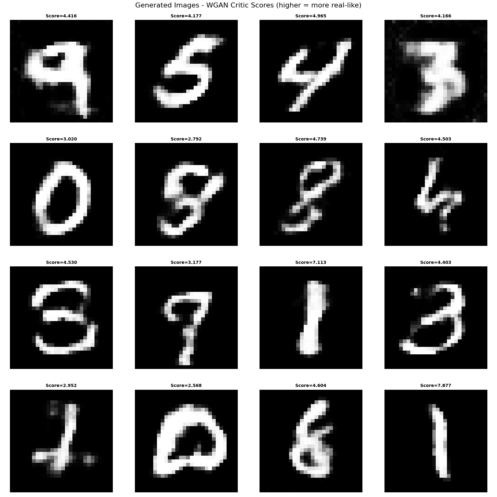
图11 WGAN-GP 的生成能力:从随机噪声生成的 MNIST 数字图像及 Critic 分数（分数越高表示 Critic 认为越接近真实分布）。
从生成结果可以观察:
与 GAN 的判别器不同，WGAN 的 Critic 输出无界标量，不做 0/1 二分类。代码中通过真实样本与生成样本的 Critic 分数统计评估训练状态:
# 真实样本与生成样本的 Critic 分数
generator.eval()
critic.eval()
with torch.no_grad():
real_score = critic(real_images).mean().item()
fake_images = generator(noise)
fake_score = critic(fake_images).mean().item()
# 统计:真实均分、生成均分、差距（真实 − 生成）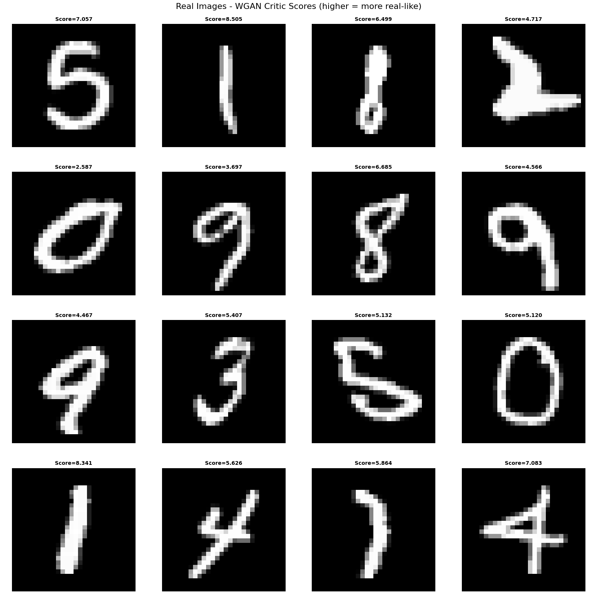
图12 真实图像的 Critic 分数（同一 batch）。
根据真实样本与生成样本的 Critic 分数统计（例如在同一 batch 上）:
从上述统计可得到以下结论:
n_critic、lambda_gp 或训练轮数。Arjovsky, M., Chintala, S., & Bottou, L. (2017). Wasserstein generative adversarial networks. International Conference on Machine Learning (pp. 214–223).
Gulrajani, I., Ahmed, F., Arjovsky, M., Dumoulin, V., & Courville, A. (2017). Improved training of Wasserstein GANs. Advances in Neural Information Processing Systems, 30.
Arjovsky, M., & Bottou, L. (2017). Towards principled methods for training generative adversarial networks. International Conference on Learning Representations.
Goodfellow, I., Pouget-Abadie, J., Mirza, M., Xu, B., Warde-Farley, D., Ozair, S., … & Bengio, Y. (2014). Generative adversarial nets. Advances in Neural Information Processing Systems, 27.
Kaiming He, Deep Generative Models.